architecture-v2 讨论区 · 2026-07-02 · 本报告汇总四项工作：① V4 原型 vs 实机实现逐屏对比（ADB 实拍）；② 可注册通道解析器架构（S7 等多项目协议接入）； ③ 采集链路协议 BTCP/1（在线流式 + 离线回传，TLV 头 + protobuf + 分包）；④ 手表控制界面规划（KMP 就绪）。 详细文档见同目录 README.md 索引；协议机器可读定义见 btcp1_draft.proto。
详见 00_prior_discussions.md。新设计全部在既有评审结论上演进，不推翻信封。
| 主题 | 状态 | 已有出处 / 空白点 |
|---|---|---|
| TLV 12B 头 + protobuf 信封、分片、CRC | 已有 v0.1 草案 | SPEC.md §4.3–4.9 + bluetrace_v0.proto（已过一轮评审，待冻结） |
| 在线高频采集（IMU/PPG 批包） | 已有 | HighFreqBatch 紧凑 bytes + batch_seq 流级丢包检测；缺会话绑定与对时 |
| 解码流水线分层 | 有思想无注册 | legacy 架构 §14 四层（FrameReader→Reassembler→dispatch→Router）；现行 SampleDecoder 是全局单例，无按设备/项目选择机制 |
| 离线采集回传 | 空白 | 仅 UI 入口与原型三屏（离线A/B/C）；设备侧存储/目录/续传协议完全没有 → 03 号文档 |
| S7 质量通信协议 | 零讨论 | 全仓库无「S7」→ 02 号文档骨架 + 待 S7 侧帧表 |
| 手表控制界面 | 仅命令原语 | Command/Ack 原语已有（SPEC §4.8）+ 设置「设备维护」占位入口 → 04 号文档 |
完整逐屏表见 01_implementation_review.md。走查路径：冷启动 → 权限门控 → 采集主界面 → 设备连接 → 用户/场景 → 在线采集运行 → 长按结束 → 摘要 → 数据/导出 → 设置全子页 → 离线采集入口。 结论：覆盖的 20+ 屏布局/文案/状态色/流转与原型逐屏一致；落盘导出链路真实可用；唯一大缺口 = 离线采集（等协议）。
| 差异/缺口 | 级别 | 说明 |
|---|---|---|
| 离线采集未实现 | 缺口·预期内 | 点击 → Toast「离线采集待协议支持」（CollectHomeScreen.kt:160 有意占位），原型离线 A/B/C 三屏等 BTCP/1 落地 |
| GNSS 数据源设置子页缺失 | 建议补 | 原型 GNSS A/B/C 三屏在设置下；实机 GNSS 开关在运行页 Sheet，「系统定位总开关关闭」引导态无处呈现 |
| 主界面双 CTA 原型未回写 | 设计稿滞后 | 实机「离线采集 + 在线采集」优于原型「扫描连接/开始采集」，应同步 v4_android.html 防漂移 |
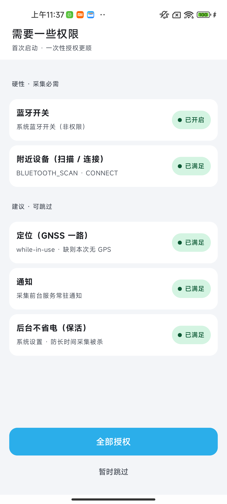
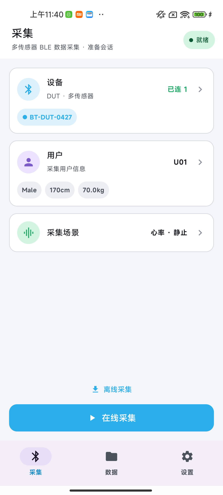
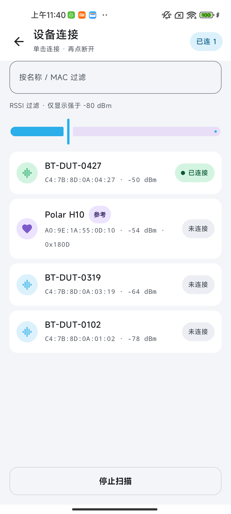
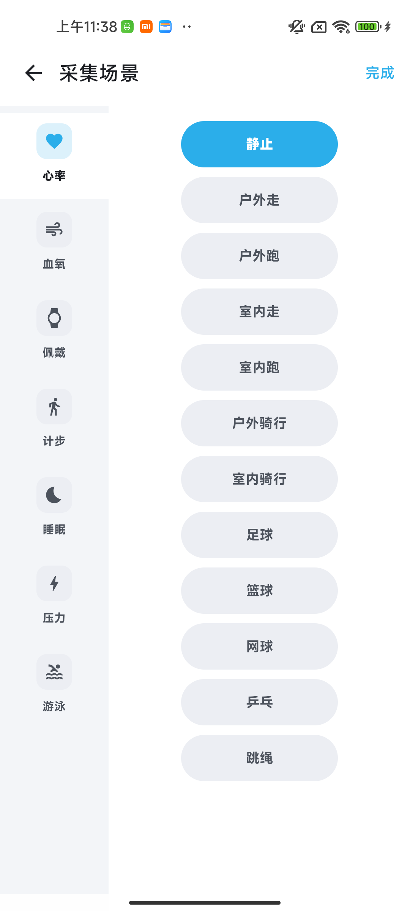
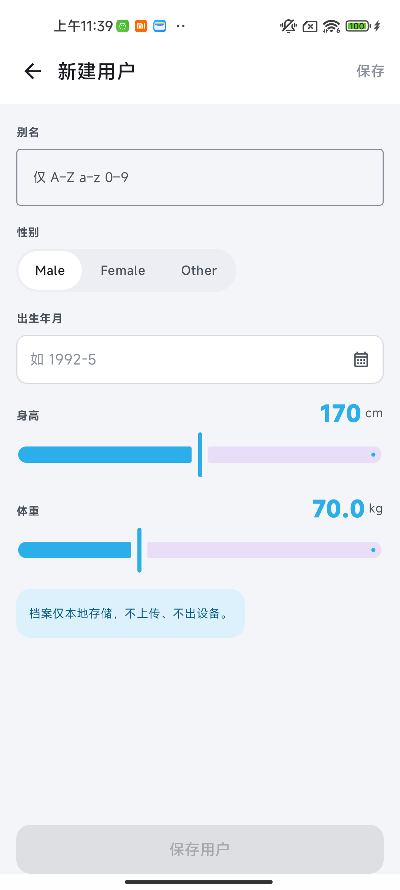
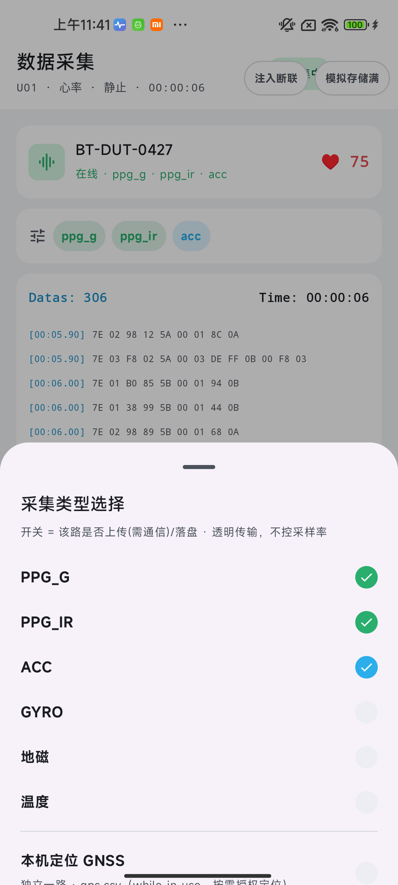
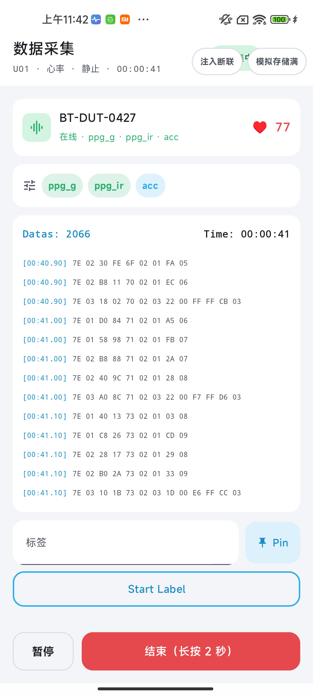
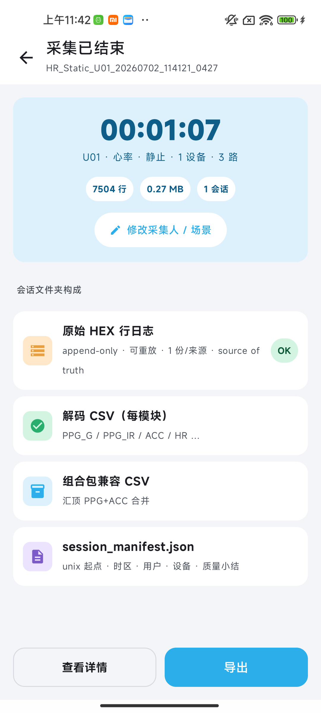
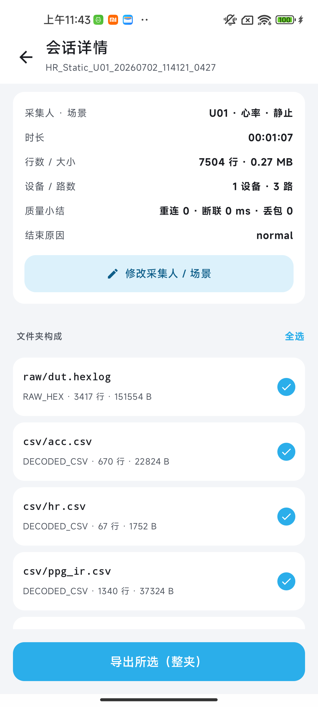
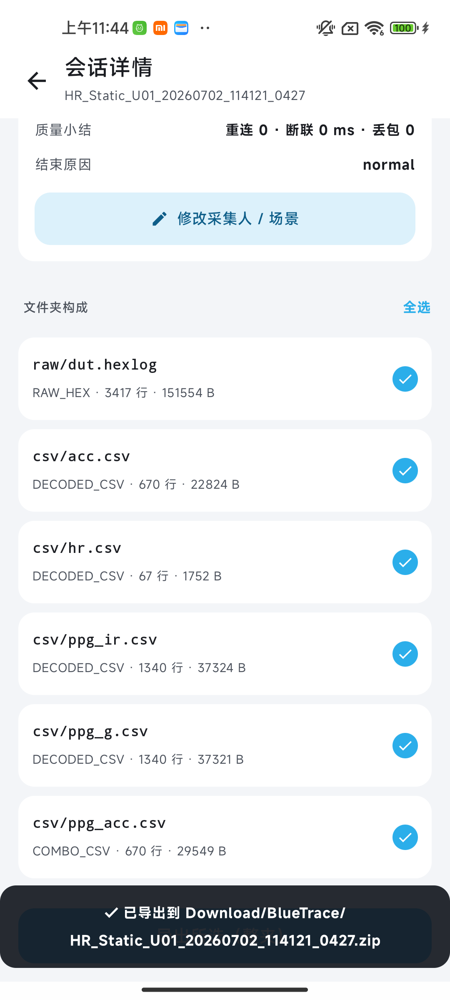
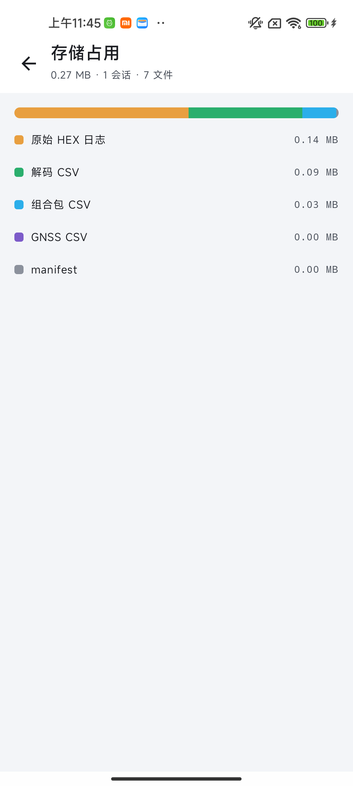
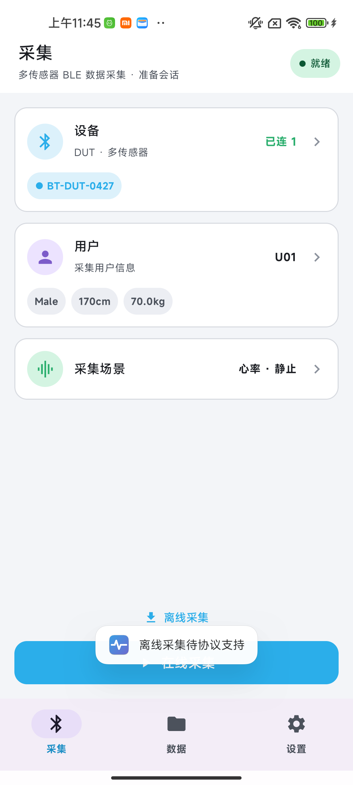
完整设计见 02_parser_registry_design.md。解决三件事：S7 等新协议接入、通道（GATT UUID）成为一等公民、多协议同会话并存。新协议接入 = 写一个 Profile + 注册一行。
ProtocolProfile：id · matches(device) · notifyChannels · writeChannel · createParser(ch) · commandEncoder()
ChannelParser：parse(notification) → 事件列表；reset()（重连清分片缓冲）
ProtocolRegistry：DI 期组装、运行期只读；session_manifest.json 记录命中的 profile.id 供离线重放选解析器
R1 RegistrySampleDecoder 适配器包住注册表——上层零改动 →
R2 Mock 协议入注册表 → R3 SessionController 事件化 →
R4 HrsProfile + Nordic 真实链路首连（风险前置，不等协议冻结） →
R5 BlueTraceV0Parser（=M7 交付物）与 S7QualityParser 各自独立落地
完整设计见 03_collect_protocol_design.md，schema 草案 btcp1_draft.proto。信封完全复用 SPEC §4（12B TLV 头 + 分片 + CRC），对 bluetrace_v0.proto 纯增量扩展。
// 一帧 = 12B 头 + payloadLen 字节 protobuf；T=msgType L=payloadLen V=protobuf ver(1) msgType(1) flags(1) fragIndex(1) fragCount(1) hdrCrc8(1) pktSeq(2LE) msgId(2LE) payloadLen(2LE) // 分片：偶发大消息（目录页等）；高吞吐路径（批包/离线块）自控大小禁分片（D-5：App 不配 MTU）
| msgType | 消息 | 方向 | 用途 |
|---|---|---|---|
0x13 | TimeSyncPong | 设→App | NTP 式对时应答（四时间戳，offset=((t1−t0)+(t2−t3))/2；锚点写 manifest 并持久化到设备） |
0x50 | SessionCatalog | 设→App | 已存会话目录（分页；允许标准分片） |
0x51/0x52/0x53 | TransferStart / Chunk / End | 设→App | 块传输：元数据+全文件 CRC32 → 数据块（单包禁分片）→ 完成/中止 |
0x54 | StorageInfo | 设→App | 设备存储占用（控制台复用） |
0x55 | OfflineSessionHeader | 仅文件内 | 离线文件首帧：会话元数据 + 对时锚点对（device_ts↔UTC） |
0x40 oneof +8 | ListSessions / OpenTransfer / TransferCredit / CloseTransfer / DeleteSession / QueryStorage / TimeSyncPing / FormatStorage | App→设 | 命令面增量（tag 9–16）；SessionControl 加 app_session_id / wall_clock_ms / offline 字段 |
OpenTransfer(resume_offset)；掉电最多损尾帧（append-only），解析容忍截断；SetPacking(25, 250ms) 单包不分片，带宽仅 ~1.2 kB/s；完整规划见 04_watch_control_plan.md。入口 = 设置 Tab 既有占位「设备维护（DUT）」；协议原语（Command/Ack + Capability/State）v0.1 已备。
设备卡（固件/RSSI/连接态）→ 对时状态 + 立即对时 → 存储占用条（复用 StorageBreakdown）→ 传感器区：能力表驱动（开关 + supported_rates 下拉 + 实际生效值对账，被夹紧时琥珀标注）→ 高级区（SetPacking / 算法多选，折叠）→ 危险区（FormatStorage 红色二次确认）。 采集运行中进入 = 只读锁定。
DeviceCommandBus：串行下发 · cmd_id↔Ack 配对 · 3s 超时；
DeviceControlSession：capability/state/storage/timeSync 的 StateFlow 快照 + 乐观更新/回滚/对账；
Compose 只留薄壳（iOS SwiftUI 后期对接同一控制器）；commonTest 用 Fake bus 覆盖超时/乱序 Ack/夹紧对账。
| 里程碑 | 内容 | 依赖 |
|---|---|---|
| W1 | shared control/ 包 + Fake 回放 commonTest（无 UI） | 02 的 R1–R3 —— 现在即可开工，零硬件依赖 |
| W2 | 控制台只读版（能力/状态/存储/对时展示） | 固件 0x11/0x12 可用 |
| W3 | 传感器开关/采样率/打包写路径（请求-确认-对账三拍） | Ack 错误码表冻结 |
| W4 | 存储管理 + FormatStorage（随 03 离线采集联调） | BTCP/1 落地 |
| W5 二期 | 写用户信息 / 固件日志 / OTA | 协议 v1.1 |